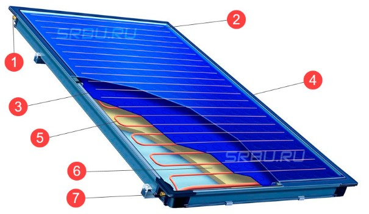
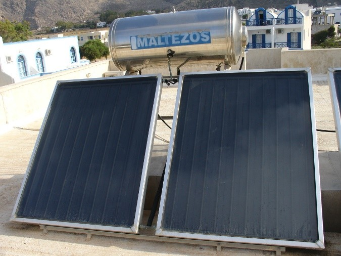
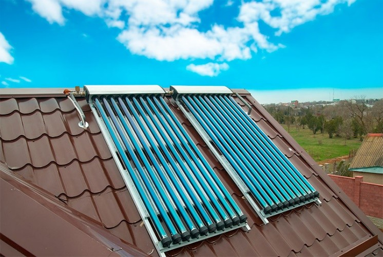
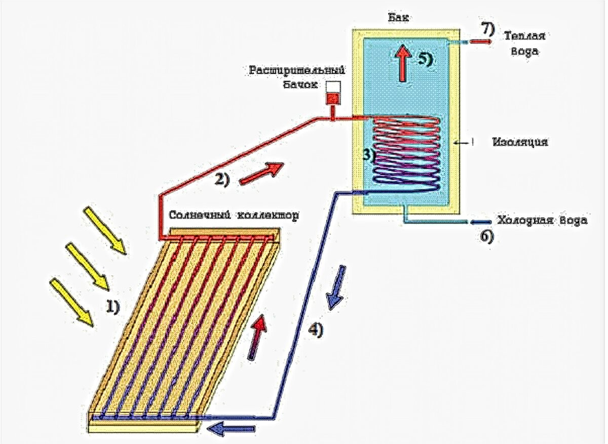

Для раскрытия первого принципа энергоэффективного дома рассмотрим принцип работы солнечного коллектора Солнечный коллектор — это тепловое устройство, преобразующее солнечный свет в полезное тепло с помощью плоских или концентрирующих технологий, использующее черную поверхность для поглощения солнечного излучения и передачи энергии рабочей жидкости (фототермический нагрев). В основе работы солнечного коллектора лежат следующие законы физики: 1. Парниковый эффект. Ультрафиолетовые лучи, попадая в коллектор, вследствие преломления меняют свою длину волны и вместе с тем способность покинуть коллектор. Благодаря этому температура в коллекторе увеличивается. 2. Закон о плотности жидкостей. Тёплая жидкость обладает меньшей плотностью (меньшим весом), поэтому она всегда устремляется вверх и тем самым вытесняет более холодную жидкость, находящуюся в баке-аккумуляторе выше. 35 3. Закон термического расширения. По мере нагрева из-за термического расширения плотность уменьшается и нагретая вода всплывает вверх, отдавая тепло воздуху, а её место замещает холодная. Принцип работы солнечных коллекторов является относительно простым. Первым элементом, «захватывающим» солнечные лучи является абсорбер, поглощающий солнечное излучение для последующего преобразования в тепло, поэтому он должен располагаться на освещенной солнечным излучением части солнечного коллектора и соединятся с трубопроводом для циркуляции теплоносителя в системе. В качестве теплоносителя выступают вода, воздух, масло или антифриз, которые циркулируют принудительным или естественным образом. Вода обычно состоит из 65% дистиллированной воды и 35% гликоля, она не замерзает при низких температурах, не испаряется при высоких. Для изготовления абсорбера применяются различные материалы, такие как, медь, алюминий, стекло. Стандартным решением повышения эффективности коллектора стало применение абсорбера из листовой меди из-за её высокой теплопроводности. Производительность системы зависит, главным образом, от типа абсорбера. Для максимального поглощения солнечного излучения на абсорбер наносят специальное поглощающее селективное покрытие, обеспечивающее максимально возможное поглощение солнечной энергии, попадающей на абсорбер, и препятствующее обратному излучению. Чем больше падающей энергии передаётся теплоносителю, протекающему в коллекторе, тем выше его эффективность. Адсорбер для защиты от внешних воздействий покрывается закаленным стеклом. Качественные характеристики стекла оказывают большое влияние на эффективность солнечного коллектора для нагрева воды. Прозрачный элемент (стекло) обычно выполняется из закалённого стекла с пониженным содержанием металлов, что делает его более прозрачным, с использованием антибликового покрытия. Для эффективной работы солнечного коллектора он выполняется в герметичном корпусе. Это дает возможность предотвратить попадание в пространство между стеклом и пластиной адсорбера влаги и пыли, рассеивающей солнечный свет. Также в это пространство может закачиваться инертный газ, что позволяет снизить переход тепла от медной пластины к стеклу. Задняя часть панели покрывается теплоизоляционным материалом.
1. Впускной патрубок 2. Защитное стекло 3. Абсорбционный слой 4. Алюминиевая рама 5. Медные трубки 6. Теплоизолятор 7. Выпускной патрубок.
По типу конструкции наибольшее распространение получили плоские и вакуумные солнечные коллекторы.
|  |  |
Плоские солнечные коллекторы отличаются хорошей производительностью в весенне-летний период, но малоэффективны для их использования в целях отопления зимой. Трубчатые вакуумные коллекторы более универсальны. С приходом зимних холодов их производительность снижается не столь существенно, как в случае плоских моделей, а значит, они могут использоваться круглогодично. В плоском коллекторе находится поглощающая решетка, изготовленная из медных труб, припаянных к высеченному листу меди. Основным компонентом вакуумного коллектора являются стеклянные вакуумные трубы. Каждая вакуумная труба состоит из двух стеклянных труб. Внешняя труба сделана из прозрачного сверхпрочного боросиликатного стекла, которое выдерживает воздействие града диаметром 25мм. Внутренняя труба также сделана из прозрачного боросиликатного стекла, покрытого специальным селективным покрытием, которое обеспечивает поглощение тепла с минимальным отражением. Во избежание теплопотерь, из пространства между двумя трубами выкачан воздух и создан вакуум. Именно вакуумная прослойка даёт возможность сохранить около 95% улавливаемой тепловой энергии. Фактически такая труба имеет устройство схожее с бытовыми термосами, только внешняя часть трубы прозрачна, а на внутренней трубке нанесено высокоселективное покрытие, улавливающее солнечную энергию. В стеклянную трубку вставлена медная трубка в алюминиевом рефлекторе, который выполняет роль мостика тепла. Процесс конвекции протекает внутри медной трубки. Температура на конце трубки может достигать 250-280ºС
Ультрафиолетовые лучи, попадая в коллектор и вследствие преломления, возникающего внутри него, меняют свою длину волны и вместе с этим способность покинуть коллектор. Благодаря возникающему при этом парниковому эффекту температура в коллекторе увеличивается. Вследствие данного процесса вода в основном контуре, проходящем через трубы, нагревается. В качестве теплоносителя чаще всего используется обычная вода. В зимнее время теплоносителем может быть только незамерзающая жидкость, которая защищает всю систему от возможного повреждения - водогликолевые растворы (40%) или антифриз. Теплоноситель работает в замкнутой системе и при нагревании поступает в бак, где отдает свое тепло воде.
Эффективность работы коллектора зависит от нескольких факторов: способа нагрева и аккумуляции тепла, времени года, погоды. Средним значением для плоского солнечного коллектора на 1 м² принято считать следующие средние значения нагрева в час: 100 литров на 7 °С; 50 литров на 14 °С; 25 литров на 28 °С; 15 литров на 46 °С; 10 литров на 70 °С. В пасмурную погоду солнечный коллектор может снизить скорость нагрева воды для системы горячего водоснабжения (ГВС), в ясную солнечную погоду, наоборот, увеличить. В теплую летнюю погоду, при отсутствии облачности водонагреватель в течение светового дня собирается около 200 л горячей воды с температурой около 40 °С, при условии, что используется коллектор, имеющий более 1,5 м² абсорбирующей площади. В климатических условиях России солнечный коллектор оптимально подходит для приготовления горячей воды для бытовых нужд и позволяет покрывать до 60-75% годового потребления. Для того, чтобы использовать солнечную энергию в течение всех четырех сезонов для теплоснабжения и охлаждения здания солнечные коллекторы встраивают в систему работы реверсивных тепловых насосов, что позволяет повысить уровень генерации теплоты и использовать солнечные коллекторы не только для ГВС, но и отопления зданий.